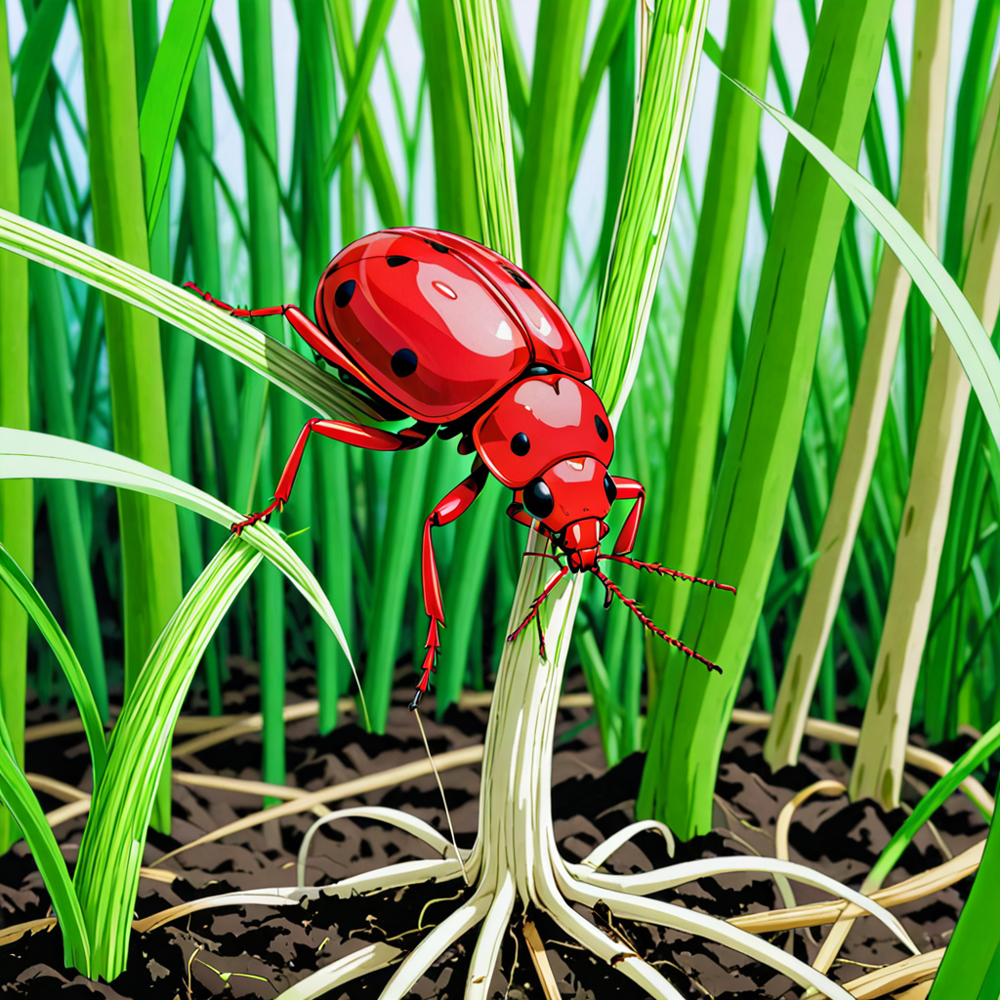

धान में जड़ सड़न रोग के कारण एवं उपाय
लेखक: नीलेश शर्मा | दिनाँक: अगस्त 17, 2024
धान में जड़ सड़न रोग का होना -
धान में जड़ सड़न रोग अर्थात धान के पौधों की जड़ों का सुख जाना, धान में जड सड़न रोग लग जाने से धान का पौधा मिट्टी से अपने पोषक तत्वों को नहीं ग्रहण कर पता है और धीरे-धीरे मुरझाते हुए नष्ट हो जाता है। धान की फसल में जड़ सड़न रोग का लगना बहुत अधिक मात्रा में पाया जाता है जिससे किसान भाइयों की फसल खराब हो जाती है। और उन्हें आर्थिक क्षति उठानी पड़ती है। इस रोग से निपटने के लिए कई उपचार (जैविक, रासायनिक) नीतियों को अपनाया जाता है।
इस लेख के माध्यम से धान में लगने वाले जड़ सड़न रोग के कारको, लक्षणों, उपचार प्रणालियों तथा उससे होने वाले आर्थिक नुकसान के बारे में चर्चा करेंगे।
धान में जड़ सड़न रोग लगने के प्रमुख कारण
धान की फसल में जड़ सड़न रोग पौधे की रोपाई के कुछ समय बाद या पौधे की मध्यवर्ती आयु के समय लगता है। धान के पौधे में जड़ सड़न रोग लगने पर पौधा बिछुप्त होकर कुछ समय उपरांत सुख कर मर जाता है। धान में जड़ सड़न रोग, पौधे की जड़ के माध्यम से फैलता है। धान में जड़ सड़न रोग के प्रमुख करणों में मिट्टी में उपस्थित फीता कृमि केंचुआ का पौधों की जड़ों को खाना, कवक का मिट्टी में उपस्थित होना एवं कवक के द्वारा पौधे के तने से होते हुए जड़ों में प्रवेश करते हुए उसकी जड़ों को नष्ट करना एवं मिट्टी में पाए जाने वाले लाल कीट या दीमक, जो पौधे की जड़ों को खाते हैं, धान में जड़ सड़न रोग का प्रमुख कारण होते हैं।खेत में अधिक जल भराव के कारण जड़ सड़न रोग
किसान भाइयों धान की फसल में लंबे समय तक जल भराव होना, जड़ सड़न रोग को धान के पौधों में उत्पन्न कर सकता है इसमें जब खेत में पानी रोपाई के समय करीब 15 सेंटीमीटर से 20 सेमी तक काफ़ी लंबे समय तक भरा होता है तो धान का पौधा जब रोपाई के दौरान सुषुप्त अवस्था में होता है तो अधिक जल भराव के कारण अपनी जड़ों को मिट्टी में सही प्रकार से नहीं जमा कर पता है और धान के पौधे की जड़े इस रोग का शिकार होकर पौधा मर जाता है
कवक फंगस के कारण धान में जड़ सड़न रोग
धान में जड़ सड़न रोग का प्रमुख कारण मिट्टी में उपस्थित मैग्नाफोर्थ सेलबिनाई नामक कवक (फंगस) का होना होता है। यह कवक अपनी सर्दियां पौधे के मारे हुए ऊतको एवं मिट्टी की निचली सतह में बीतता है एवं बरसात के मौसम में उच्च नमी व आद्रता के होने पर संपूर्ण खेत में फैल जाता है और धान के पौधों की सतह पर चिपक कर तने में छिद्र करके जड़ में पहुंचकर धान में जड़ सड़न रोग को उत्पन्न करता है।इस कवक से ग्रसित धान का पौधा शुरुआती अवस्था में सामान्य दिखाई देता है, परंतु पौधा जैसे ही परिपक्वता की ओर पहुंचता है तो धीरे-धीरे उसका आंतरिक तना व जड़े पूरी तरह से सड़कर मर जाती हैं।
दीमक के कारण धान में जड़ सड़न रोग
धान में जड़ सड़न रोग का एक प्रमुख कारण पौधे की जड़ों में दीमक लग जाना होता है। मिट्टी में उपस्थित दीमक पौधे की जड़ों को खाकर उन्हें नष्ट कर देती है जिससे कि पौधा सूख जाता है। धान में जड़ सड़न रोग पैदा करने वाली दीमक सर्दियों के समय में मिट्टी के नीचे चली जाती हैं और अधिक गहराई गहरी जुताई ना होने के कारण नष्ट नहीं हो पाती। जैसे ही धान की फसल की रोपाई होती है वे नीचे से निकाल कर अपनी आहार की पूर्ति के लिए धान के पौधों की जड़ों को खाना शुरू कर देती हैं जिससे की धान का पौधा सड़कर मर जाता है।
अधिक उर्वरकों के प्रयोग के कारण जड़ सड़न रोग
धान में जड़ सड़न रोग उर्वरकों के अधिक प्रयोग के कारण भी उत्पन्न हो सकता है। मिट्टी में आवश्यकता से अधिक उर्वरकों का प्रयोग होने पर मिट्टी का PH मान बढ़ जाता है जो कि धान के पौधे के लिए अनुकूल नहीं होता जिससे धन के पौधे की जड़े सड़ने लग जाती हैं और धान की फसल जड़ सड़न रोग के कारण नष्ट हो जाती है।
धान में लाल कीड़ा,फीताकृमि केंचुए के कारण जड़ सड़न रोग
धान में जड़ सड़न रोग उत्पन्न होने का प्रमुख कारण मिट्टी में उपस्थित फीताकृमि केंचुए, लाल कीड़े के द्वारा धान के पौधों की जड़ों को खाना होता है। यह लाल कीड़ा, केंचुआ धान की रोपाई के कुछ समय बाद ही जल भराव के कारण उत्पन्न होकर पौधे की जड़ों को चूसकर उन्हें खाना प्रारंभ कर देता है जिससे धान के पौधे की जड़ें नष्ट हो जाती है और पौधा जड़ सड़न रोग के कारण सूख कर मर जाता है।
धान में जड़ सड़न रोग से बचने के उपाय
जल भराव के कारण धान में जड़ सड़न रोग से बचने के उपाय
धान में जड़ सड़न रोग, यदि खेत में अत्यधिक जल भराव के कारण हो रहा है तो इससे बचने के लिए रोपाई के समय खेत में लगभग 3 सेमी से 5 सेंटीमीटर पानी ही रहने दें, जिससे कि जब धान का पौधा रुपाई के समय सुषुप्त अवस्था में हो तो उस पर जल भराव का प्रभाव ना हो पाए और वह अच्छे से रोपाई के तीन से चार दिन के अंदर मिट्टी में अपनी जड़ों को आसानी से जमा कर सके और जड़ों का विकास तेजी से हो पाए। इस प्रकार हम धान में जो जल भराव के कारण जड़ सड़न रोग उत्पन्न होता है, उससे बच सकते हैं।
कवक (फंगस) के कारण धान में जड़ सड़न रोग से बचने के उपाय
यदि धान में जड़ सड़न रोग खेत में उपस्थित कवक(फंगस) के कारण उत्पन्न हुआ है जिसमें फंगस पौधे से चिपक कर मध्यवर्ती तने को खाकर जड़ को सड़ाने का कार्य करता है। इससे बचने के लिए निम्न रासायनिक कीटनाशकों का प्रयोग करके खत्म कर सकते हैं।
दीमक लगने के कारण धान में जड़ सड़न रोग से बचने के उपाय
किसान साथियों यदि धान में जड़ सड़न रोग दीमक लगने के कारण उत्पन्न हुआ है जिसमें दीमक पौधे की जड़ों को खाकर उसे सड़ा देती हैं। इस प्रकार उत्पन्न हुए रोग के लिए हम निम्न कीटनाशक का प्रयोग करके फसल को जड़ सड़न रोग से बचा सकते हैं।
लाल कीड़ा, फीता कृमि केंचुए के कारण धान में जल सड़न रोग से बचने के उपाय
धान की फसल में जो लाल कीड़ा या फीता कृमि केंचुए के कारण जड़ सड़क उत्पन्न हो रहा है। उससे बचने के लिए हम निम्नलिखित कीट नाशकों का प्रयोग कर सकते हैं।
ध्यान दे :- "उपयुक्त लेख में दी गई जानकारी स्वयं के अनुभव व शैक्षणिक स्रोतो के माध्यम से प्राप्त करके प्रस्तुत की गई है"